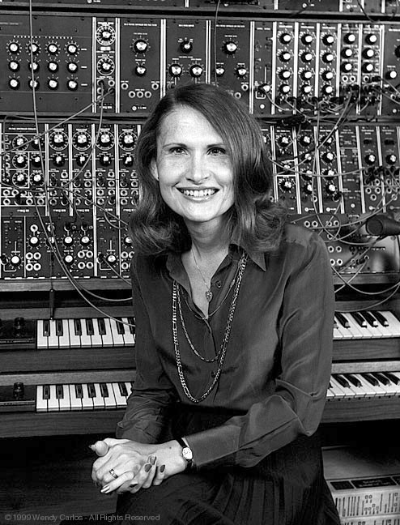

Compositora
Wendy Carlos
Biografía
Wendy Carlos es una compositora e intérprete estadounidense de música electrónica. Carlos fue una de las primeras intérpretes famosas de música electrónica que usaron sintetizadores, consiguiendo popularizar el género hacia una audiencia más amplia y heterogénea. Ya que es una mujer trans, es conocida como la reina trans del sintetizador.
Obras
- Switched On Bach
- A Clockwork Orange
- The Shinning
- Tron
Switched On Bach. Regreso de la música clásica al ámbito popular.
Encendiendo a Bach es el album debut de la compositora estadounidese Wendy Carlos, lanzado en octubre de 1968 por Columbia Records.Producido por Carlos y Rachel ELkind, el álbum es una colección de piezas de Johann Sebastian Bach interpretado por Carlos y Benjamin Folkman en un sintetizadoor Moog. Esta obra colocó a los sintetizadores moog al centro de la escena cultural pop. Se convirtió en uno de los discos de música clasica más vendidos de la epoca.